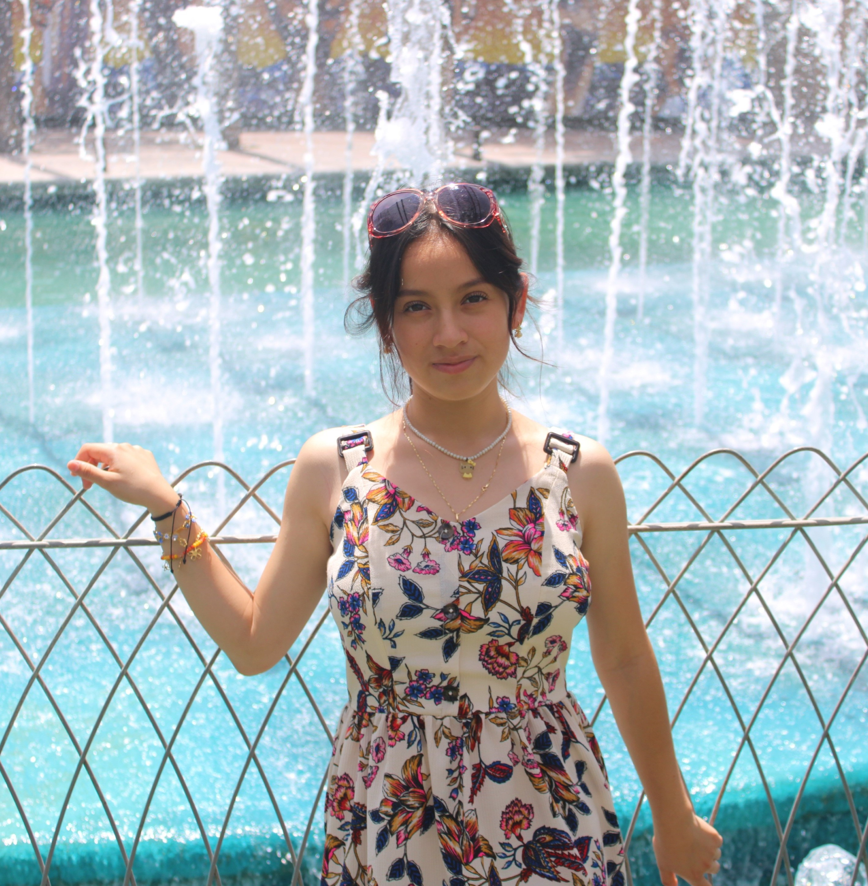

Diana García Landa
Teléfono: +52 271 180 9293
Email: dianalanda220@gmail.com
Dirección: Los Filtros, Córdoba, Veracruz, 94510
Perfil Profesional
Ingeniera en formación en Sistemas Computacionales y TSU en Entornos Virtuales y Negocios Digitales, con experiencia en desarrollo web,
administración de redes y soporte técnico. Cuento con habilidades en programación, bases de datos y virtualización.
Me interesa la implementación de soluciones tecnológicas enfocadas en el crecimiento de negocios digitales.
Destaco por mi capacidad de aprendizaje, adaptabilidad y enfoque en la innovación.
Formación Académica
- Ingeniería en Sistemas Computacionales- Instituto Tecnológico de Orizaba (2022 - Actualidad)
- TSU TIEVND - Universidad Tecnológica del Centro de Veracruz (2023 - Actualidad)
- Capacitación para el Trabajo: Java - Colegio de Bachilleres del Estado de Veracruz (2019-2022)
Experiencia Laboral
Auxiliar de Sistemas en Hospital Covadonga Córdoba (Agosto 2024 - Febrero 2025)
Habilidades Técnicas
- Java
- C#
- SQL
- Python
- HTML / CSS
Tecnologías y Herramientas
- IDEs: Eclipse, NetBeans, Visual Studio
- Bases de datos: MySQL, PostgreSQL
- Herramientas de diseño gráfico: Canva
- Microsoft Office: Word, Excel, PowerPoint
- Fundamentos de redes
Habilidades Blandas
- Comunicación
- Trabajo en equipo
- Adaptabilidad y flexibilidad
- Gestión del tiempo y organización
Idiomas
Español (Nativo)
Inglés (A2)
Formación Complementaria
- Curso de Mantenimiento Preventivo de PC
- XI Congreso Nacional de Ingenierías, Instituto Tecnológico de Orizaba
Regresar